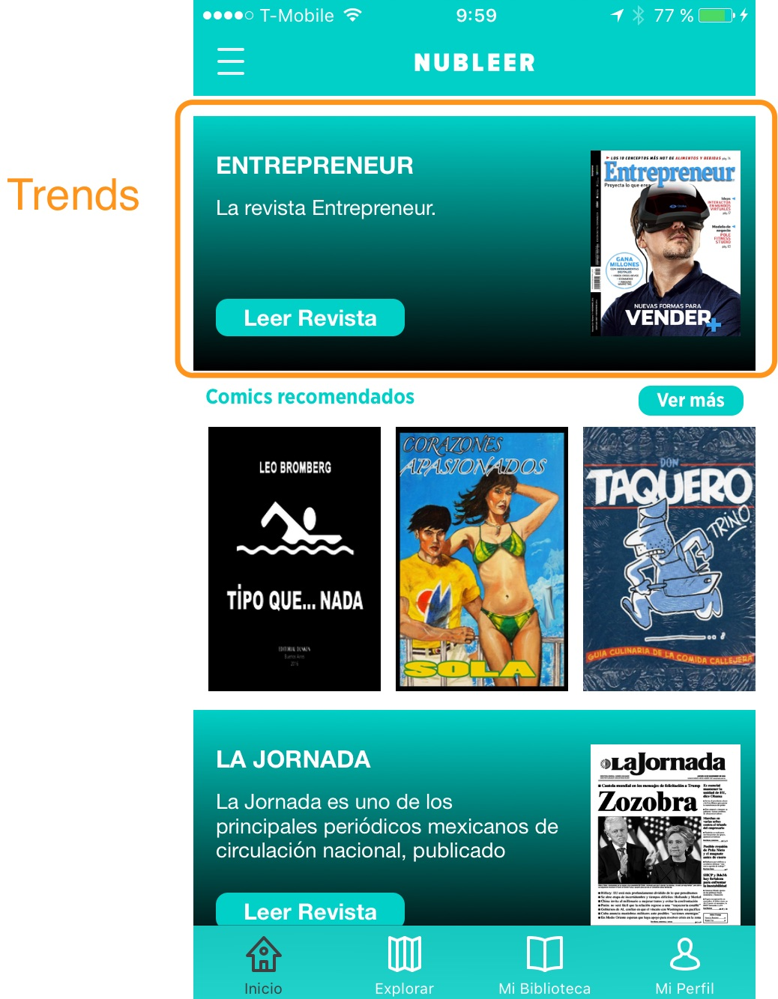
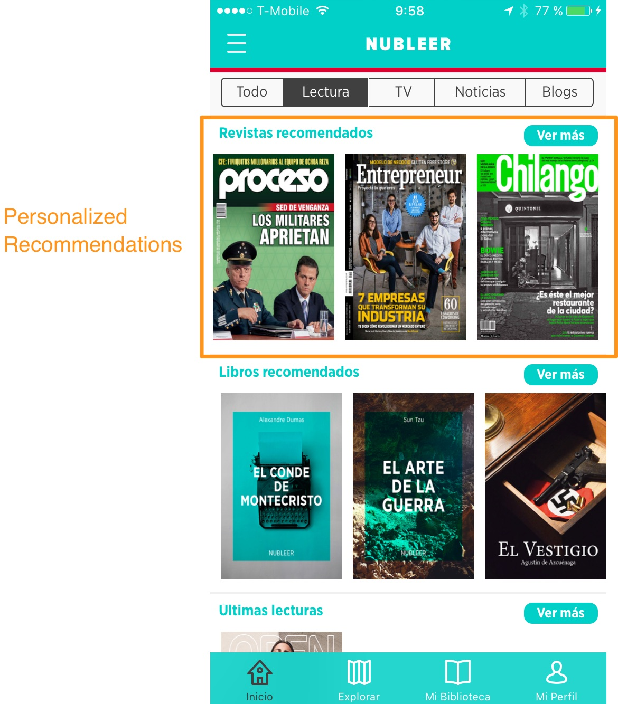
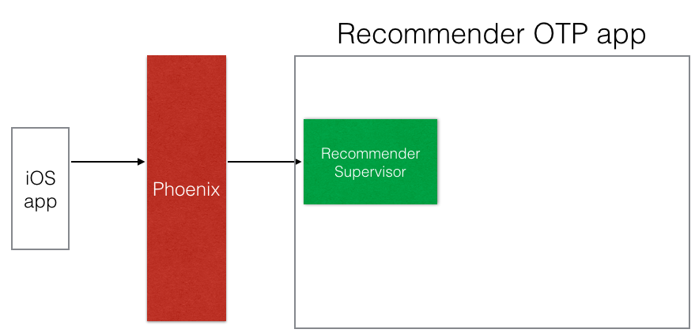
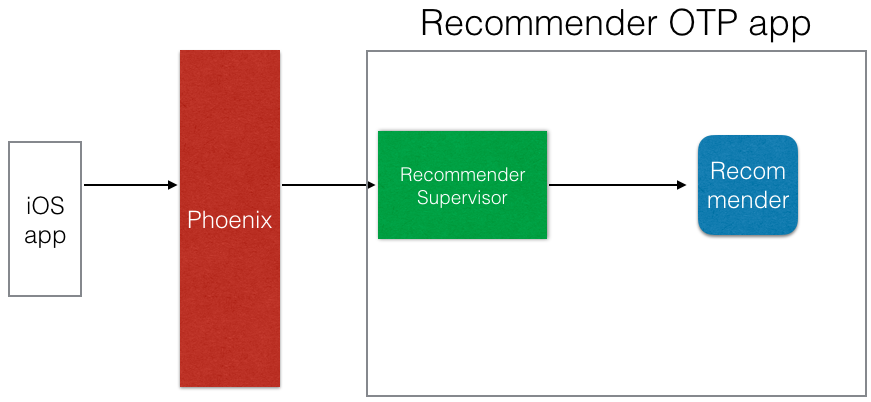
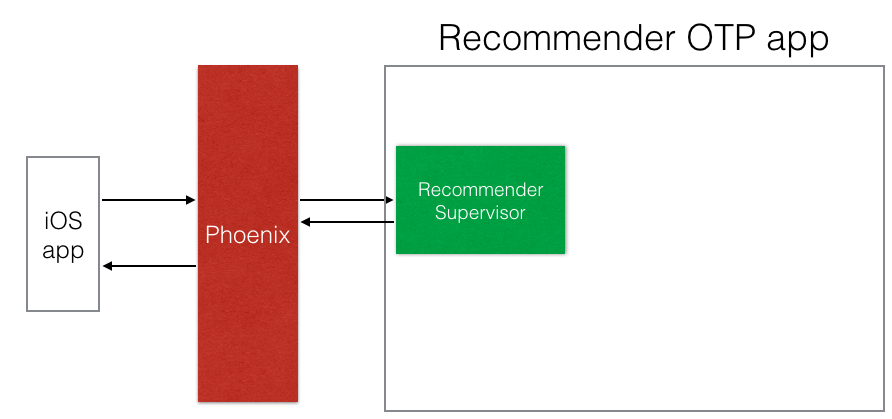
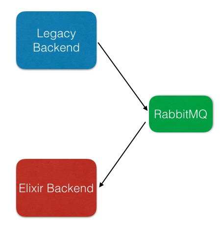

Elixir at Work
Erick Camacho @ecamacho
November 2016
ex - Nubleer (a mexican startup)
What we did
- Support for ebooks
- Support for a new payment gateway (Stripe)
- A recommendation system (recommends magazines, comics, ebooks, videos and news)
A bit of background
We were using Go
Great performance an a small memory footprint

But the language...
It isn't dynamic
It's hard to model complex objects hierarchies
Fault tolerance has to be managed by hand
1 year later it has been a success
This is what I learned
1. Embrace OTP

OTP apps encapsulate common functionality
and group processes together
Each OTP app should have a Supervisor
mix new recommendations --module Recommendations --sup
mix new payments --module Payments --sup
#In your phoenix app
defp deps do
[{:phoenix, "~> 1.2.1"},
...
{:payments,
git: "git@yourgitserver.com:nubleer/payments.git",
checkout: "0.0.1"},
{:recommendations,
git: "git@yourgitserver.com:nubleer/payments.git",
checkout: "0.0.1"},
]
end
#In your phoenix app
def application do
[mod: {Services, []},
applications: [:phoenix, ...,
:payments, :recommendations]]
end
2. Use Umbrella projects
mix new nubleer --umbrella
#inside apps folder
mix phoenix.new services
mix new recommendations --module Recommendations --sup
mix new payments --module Payments --sup
In your phoenix app
defp deps do
[{:phoenix, "~> 1.2.1"},
...
{:payments, in_umbrella: true},
{:recommendations, in_umbrella: true},
]
end
No need to update mix dependencies
All on the same repo
reload() works!
3.
Supervisor strategies

One for one
Global GenServer
Example: A gen server that calculates the trending magazines for each day





Simple one for one
Creates a Gen Server each time a request is made
One process per user
Example: We create a GenServer each time a user requests her personalized recommended ebooks

Poolboy
Creates a pool of GenServers and load balance messages among them
Example: We create a set of RabbitMQ listeners per each RabbitMQ exchange
And more...
Plugs are awesome
Ecto rocks
Invest on training
With Elixir...
Q & A
Erick Camacho @ecamacho